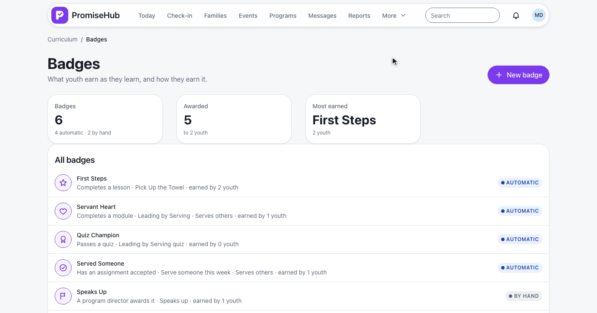
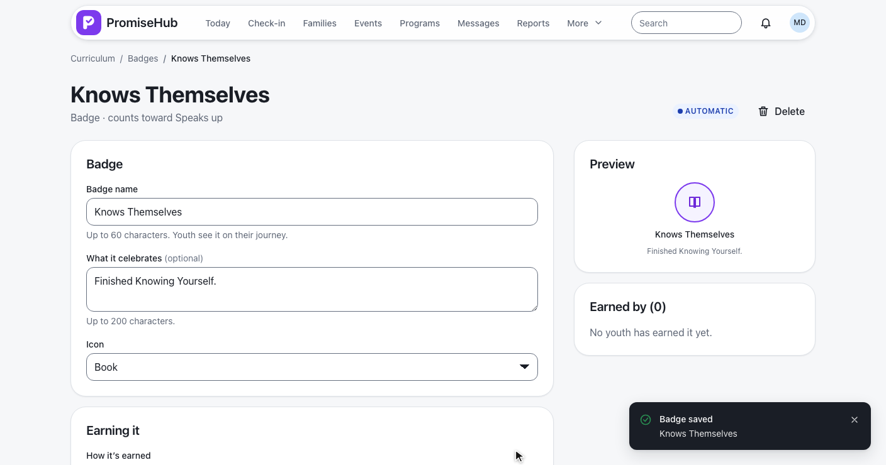
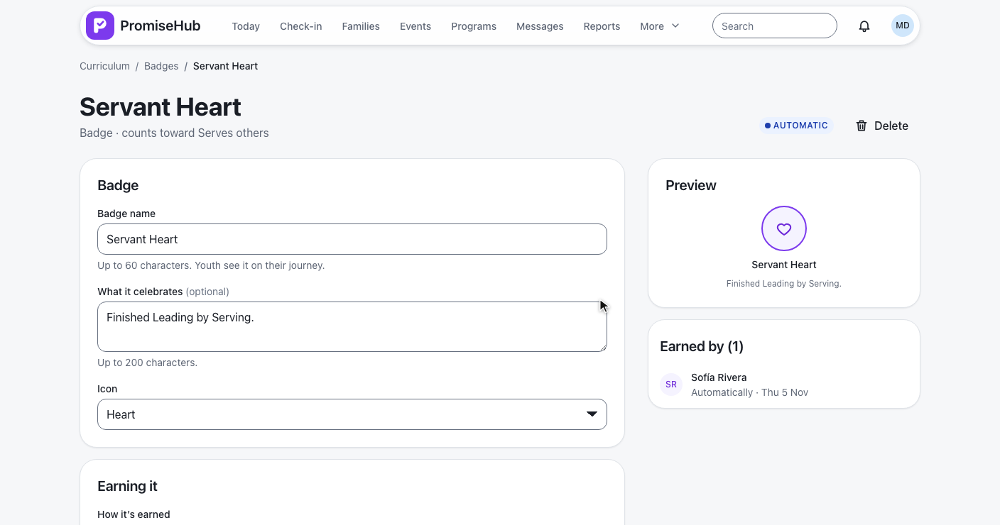
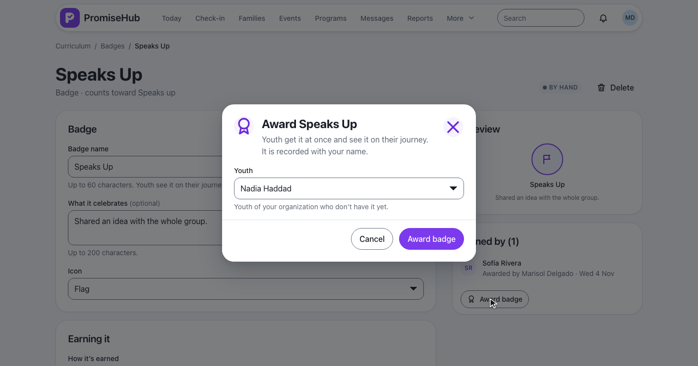
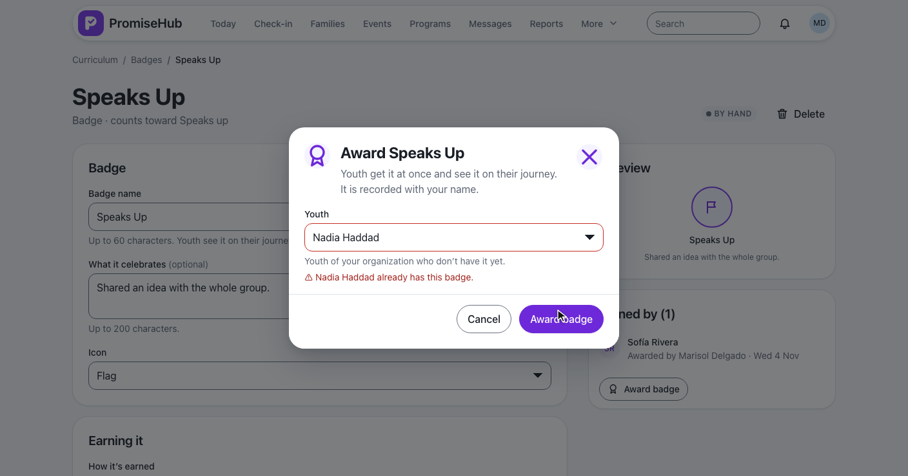
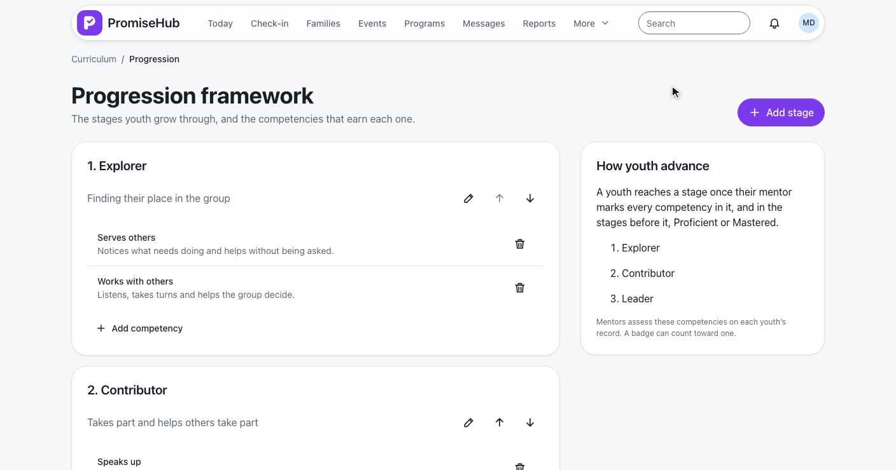
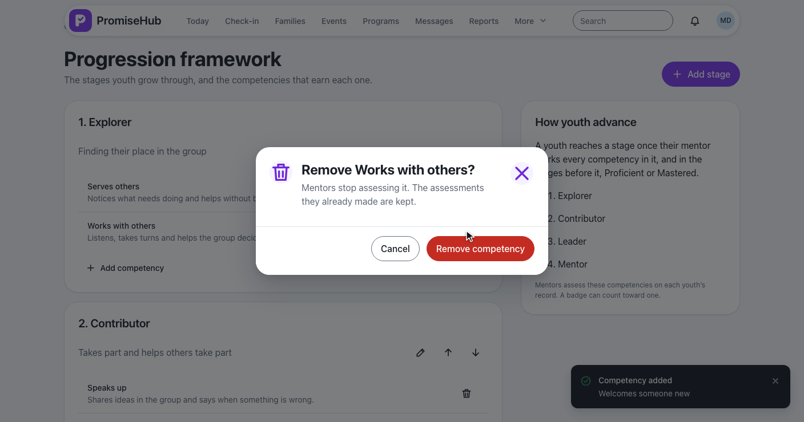
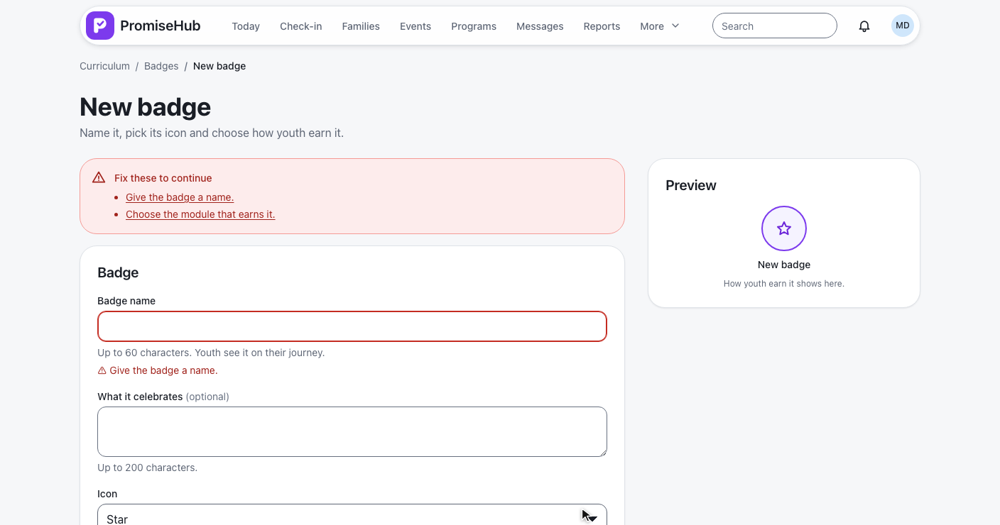

PromiseHub · Video 64
Author badges and progression
Badges earned by a rule or by hand, and the stages youth grow through
Badges earned by a rule or by hand, and the stages youth grow through
The list and its counts, then a new automatic badge for a module.


| Rule | Checked after |
|---|---|
| Completes a lesson | The lesson is done |
| Completes a module | Every published lesson done, every required quiz passed |
| Passes a quiz | An attempt scored and passed, after approval when needed |
| Has an assignment accepted | The mentor accepts the submission |
BadgeAwarder · once per badge and youth · notified and audited

Speaks Up awarded to Nadia Haddad, with Marisol's name.


Three stages, a new one, a competency added and one removed.


Badges, a badge and the framework.
Invalid, already awarded, failed, no badges, forbidden, Learning off.
| Caller | Answer |
|---|---|
| Admin, program director | Their organization's badges and framework |
| Site lead, youth worker, mentor, youth | 403 |
| Another organization's id | 404 |
| Learning off | 404, routes go to Today |

CurriculumBadgesTests, BadgeAwardingTests, BadgeManualAwardTestsCurriculumProgressionTests: stages, order, competencies, the mentor's sheetcurriculum-badges.spec.ts, badge-awards.spec.ts, curriculum-progression.spec.ts on phone and laptop, with axe
Next: youth see their journey